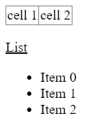

Getting Started
Overview
htmlobj allows you to create HTML using nothing but Python code. It is an alternative to using templates, as used in many web frameworks, which usually have their own non-Python language. With htmlobj, you can just create the HTML objects directly in code, and return the str representation to the web engine.
Using Python with statements to build the htmlobj objects allows you to easily see the HTML structure, and add in any Python code you need. When complete, the str value of the object will return HTML text.
Here is a brief example:
from htmlobj import HTML
h = HTML("html")
with h.table(border="1", style="border-collapse:collapse"):
with h.tr:
h.td("cell 1")
h.td("cell 2")
h.p.u("List")
with h.ul as mylist: # optional `as` var name
for i in range(3):
mylist.li(f"Item {i}")
print(h) # show `str` representation
-> '<table><tr><td>cell 1</td>...'
When rendered in a browser, the result will look something like:

Not the prettiest web page, but of course you can add CSS, class_ and other attributes to style the output. See the simple_page.py example in the source code for a more complex version of the above, including links, CSS classes and styles.
Installing
pip install htmlobj
Auto-generate code
If you have a web page with content similar to what you want, you can directly create a Python file from the command line by running htmlobj.html_parser with python -m:
python -m htmlobj.html_parser https://example.com > my_code.py
Alternatively, you can do the same thing in code using from_url and codify:
h = HTML.from_url("https://example.com/")
print(h.codify())
either method gives output like
h = HTML()
with h.html:
with h.head:
h.title("Example Domain")
h.meta(charset="utf-8")
h.meta(http-equiv="Content-type", content="text/html; charset=utf-8")
...
You can then edit the code as needed.
More details
You may supply a tag name and some text contents when creating a HTML instance:
>>> h = HTML('html', 'text')
>>> print(h)
<html>text</html>
You may also append text content later using the tag's .text() method
or using augmented addition +=. Any HTML-specific characters (<>&")
in the text will be escaped for HTML safety as appropriate unless
escape=False is passed. Each of the following examples uses a new
HTML instance:
>>> p = h.p('hello world!\\n')
>>> p.br
>>> p.text('more → text', escape=False)
>>> p += ' ... augmented'
>>> h.p
>>> print(h)
<p>hello, world!<br>more → text ... augmented</p>
<p>
Note: You can also use raw_text as a shortcut for text('text', escape=False).
The top-level HTML object adds newlines between tags by
default. Finally in the above you'll see an empty paragraph tag - tags with
no contents get no closing tag.
You may turn off/on adding newlines by passing newlines=False or
True to the tag (or HTML instance) at creation time:
>>> l = h.ol(newlines=False)
>>> l.li('item 1')
>>> l.li('item 2')
>>> print(h)
<ol><li>item 1</li><li>item 2</li></ol>
Since we can't use class in Python code (it is a reserved Python keyword), the library recognises class_ or klass as a substitute:
>>> print(h.p(content, class_="styled")) # or print(h.p(content, klass="styled"))
<p class="styled">content</p>
How generation works
The HTML document is generated when the HTML instance is "stringified".
This could be done either by invoking str() on it, or just printing it.
It may also be returned directly as the "iterable content" from a WSGI app
function.
You may also render any tag or sub-tag at any time by stringifying it.
Tags with no contents (either text or sub-tags) will have no closing tag. There is no "special list" of tags that must always have closing tags, so if you need to force a closing tag you'll need to provide some content, even if it's just a single space character.
Rendering doesn't affect the HTML document's state, so you can add to or otherwise manipulate the HTML after you've stringified it.
Creating XHTML
To construct XHTML start with an instance of htmlobj.XHTML() and use it
as you would an HTML instance. Empty elements will now be rendered
with the appropriate XHTML minimized tag syntax. For example:
>>> from htmlobj import XHTML
>>> h = XHTML()
>>> h.p
>>> h.br
>>> print(h)
<p></p>
<br />
Creating XML
A slight tweak to the htmlobj.XHTML() implementation allows us to generate
arbitrary XML using htmlobj.XML():
>>> from htmlobj import XML
>>> h = XML('xml')
>>> h.p
>>> h.br('hi there')
>>> print(h)
<xml>
<p />
<br>hi there</br>
</xml>
Tags with difficult names
If your tag name isn't a valid Python identifier name, or if it's called "text" or "raw_text" you can add your tag slightly more manually:
>>> from htmlobj import XML
>>> h = XML('xml')
>>> h += XML('some-tag', 'some text')
>>> h += XML('text', 'some text')
>>> print(h)
<xml>
<some-tag>some text</some-tag>
<text>some text</text>
</xml>